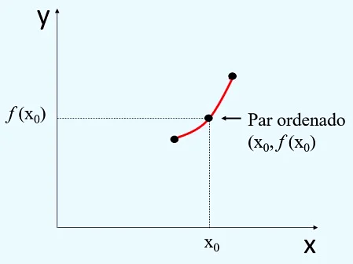
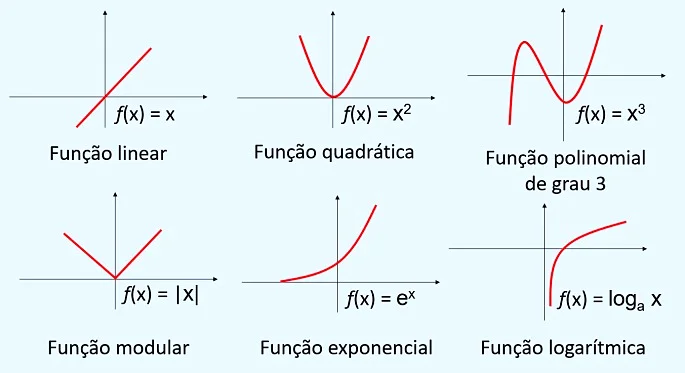

Funções
Na Matemática, função corresponde a uma associação dos elementos de dois conjuntos, ou seja, a função indica como os elementos estão relacionados. Estabelecemos uma função quando relacionamos uma ou mais grandezas.Parte dos fenômenos naturais pode ser estudada graças ao desenvolvimento nessa área da matemática. O estudo das funções é dividido em duas partes, temos a parte geral, em que estudamos os conceitos gerais, e a parte específica, em que estudamos os casos particulares, como as funções quadráticas,afim e exponenciais.

A relação entre suas variáveis
A maneira como um elemento y se relaciona com um elemento x é expressa através de um gráfico, que nos dá a ideia do comportamento da função. Cada ponto no gráfico é dado por um par ordenado de x e y, onde x é o valor de entrada e y é o resultado da relação definida pela função, ou seja, x → função → y.
Como construir um gráfico de função
Para construir um gráfico, cada elemento x da função deve ser inserido no eixo horizontal (abcissas) e os elementos y são posicionados no eixo vertical (ordenadas). Os possíveis valores de x formam o conjunto Domínio. Já o conjunto dos valores assumidos por y, formam o conjunto imagem. Confira alguns exemplos de gráficos de funções.
